The Ultrahuman M1 is a wearable glucose monitoring system designed to help users optimize their metabolic health. It works by continuously measuring glucose levels from the interstitial fluid using a CGM (Continuous Glucose Monitor) sensor that is worn on the back of your arm. The data is synced with the Ultrahuman app, where it is analyzed and interpreted.
It is not a medical device (like CGMs used by diabetics), but a consumer-grade tool for wellness tracking.
How It Works
The device uses a tiny filament inserted just under the skin (painlessly, for most people).
It tracks your glucose levels 24/7, updating every few minutes (bluetooth enabled) or when scanned (NFC enabled sensors).
You scan the sensor with your phone (or it auto-syncs, depending on the version) to retrieve the data.
Types Of Sensors & Regions
The Ultrahuman M1 utilizes Abbott's FreeStyle Libre continuous glucose monitoring (CGM) sensors. Specifically, it integrates with the FreeStyle Libre 1, Libre 2, Libre 2 Plus, Libre 3 Plus, Libre Pro sensors and GlucoRx's Vixxa 2 depending on the region and availability.
These sensors are FDA-approved, medical-grade devices that measure glucose levels in the interstitial fluid. Ultrahuman packages these sensors in their original form, including additional accessories like alcohol wipes and protective patches.
India: GlucoRx's Vixxa 2, Libre 1, Libre Pro
UK/EU: Libre 2 and Libre 2 Plus
UAE: Libre 2 and Libre 2 Plus
USA: Libre 3 Plus
Ultrahuman App Features
Real-time glucose feedback: See how your body responds to food, workouts, sleep, and stress.
Glucose score: A simplified number to help interpret the quality of your metabolic response.
Actionable insights: Personalized recommendations to improve energy, focus, and metabolic flexibility.
Food and lifestyle tracking: Correlate specific meals or habits with glucose spikes or dips.
Why People Use It
Fitness optimization: Athletes use it to fine-tune performance and recovery.
Fat loss: Helps users avoid glucose spikes that can hinder fat metabolism.
Health monitoring: Offers insights, even for non-diabetics.
Biohacking: Used by enthusiasts looking to optimize longevity and cognitive performance.
What's In The Box
A CGM sensor (Ultrahuman partners with Abbott FreeStyle Libre and GlucoRx's for the hardware)
3 hypoallergenic protective skins for the CGM
An alcohol wipe
Sensor Application Tips
The sensor must be applied when you are completely fasted (early morning), and you must also avoid food and drink during the 60-minute warming-up window. This is necessary so that the sensor can accurately calibrate your baseline.
Wait for the alcohol wipe to dry completely before applying the sensor. The moisture might prevent the adhesive from sticking to the skin. Waiting 3-4 minutes before applying the sensor after wiping the area is a must.
Shave the area of the application completely so that the sensor adhesive can stick to the skin. Hair can cause the sensor to fall off.
There should be no tattoos, scars, or stretch marks in the application area, as this can affect the calibration.
Videos
Onboarding Call
We have an onboarding call every Wednesday at 8:30 pm and Friday at 3:00 pm, and we recommend that you join that. You can book your slot for the call here.
M1 Lite
Key Features
Bring Your Own Sensor: Utilize your existing compatible Abbott sensors
Ultrahuman App: primary dashboard for M1 data, insights, and notifications.
Ring AIR: combines glucose data with recovery metrics for M1 Lite users.
US data flow: Sensor → Libre 3 Plus app → Terra → Ultrahuman app.
Sync Checks
Ensure Bluetooth, background sync, and app permissions are enabled for reliable data flow.
Explore Troubleshooting
Applicator Fail
Users may report that the applicator pin is missing or that the applicator was triggered before placement. In both cases, the sensor cannot be applied after this happens.
What the user might see
Missing applicator pin.
Applicator triggered before placement.
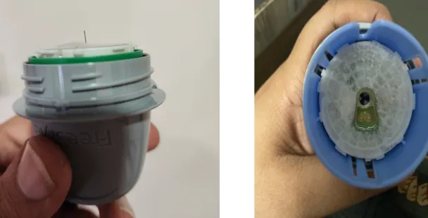
Ask for photos of the applicator. Add screenshots if available.
Agent diagnosis steps
Ask the user to share photos of the applicator.
Confirm whether the pin is missing or the applicator was triggered accidentally.
Related Tags:sensor_discomfort_replacement, sensor_discomfort
Overview
This is when a user reaches out saying they are experiencing discomfort due to the sensor. This can include rashes, swelling, bleeding, pain, numbness, or tingling sensations in the arm.
Agent diagnosis steps
Ask if the pain/discomfort has increased or reduced since applying the sensor.
If the user says the pain is unbearable, advise them to remove the sensor.
Ask them to rate the pain on a scale of 1-10.
If the pain is 7-10, offer a replacement immediately.
For all discomfort cases, subtly ask if they are willing to wait a few hours to see if the pain goes down.
Knockoffs occur when the sensor gets dislodged from the user’s arm. This can happen due to improper application, impact, or excessive sweating.
What the user might see
Sensor detached.
Adhesive coming off.
Patch lifting.
Agent diagnosis steps
The application area must be shaved.
They must wait for the alcohol wipe to fully dry before applying the sensor.
The black cover patch must be securely adhered to the sensor.
Resolution
If the user has UltrahumanX, replace the sensor.
If they do not have UltrahumanX, send the Non_UHX_Knockoff macro.
Tags & macros
Yellow tags: sensor_knock_off.
Macro: Non_UHX_Knockoff (if applicable).
Vixxa Sensor TS
Related Tags:sensor_app_usage_Q
Overview
These steps should be followed when a user has mistakenly connected their Vixxa sensor to the Vixxa app instead of the Ultrahuman app and now wants to set it up correctly.
What the user might see
Sensor paired with Vixxa app.
Error when attempting to connect with Ultrahuman.
Missing glucose readings in UH app.
Suggested troubleshooting steps
Go to the Vixxa app and select the Account icon.
Click on Pairing.
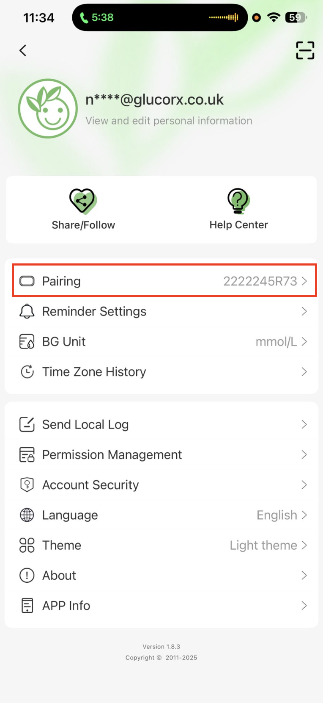
Click on My sensors.
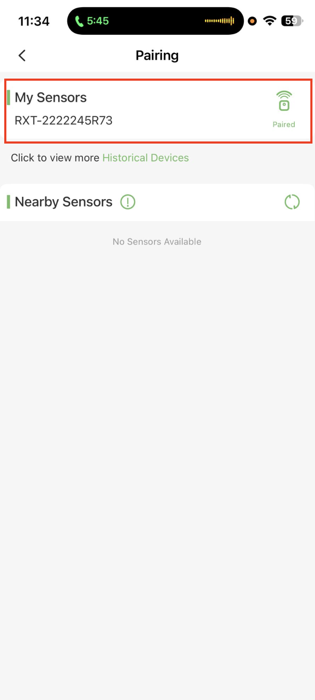
Click on Unpair.
Go to your system Bluetooth settings and choose your paired sensor, then click Forget this device.
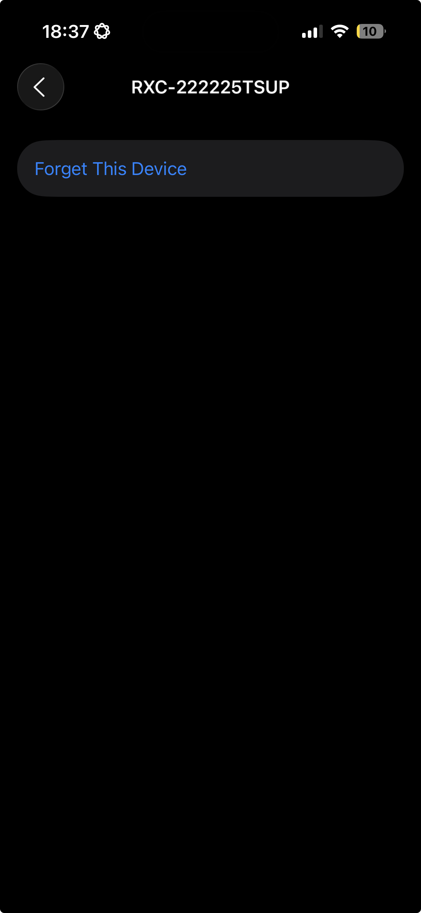
Go to the Ultrahuman app and reconnect the device. Ensure they see a Bluetooth pairing request while doing it via the UH app.
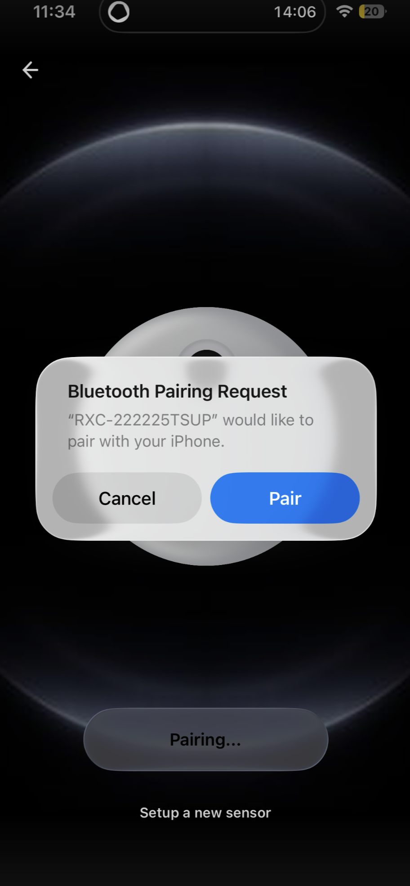
Resolution
If completed immediately after activation, previous glucose values will appear normally.
If done mid-stint, earlier glucose readings will not be visible.
Tags & macros
Yellow tags: sensor_app_usage_Q.
Macro: None.
Invalid Readings
Related Tags:sensor_invalid_readings, sensor_invalid_reading_midway
Overview
This refers to cases where the sensor displays incorrect or frozen readings for extended periods. These issues can occur due to rare manufacturing defects or during the initial calibration window.
What the user might see
Reading stuck on the same value for a long time.
No glucose graph being generated.
Readings that don’t match the user’s symptoms or expected trends.
Agent diagnosis steps
Ask the user to share a screenshot of the current reading or graph.
This issue occurs when the sensor does not properly initialize, causing the app to repeatedly show a 60-minute warm-up countdown after each scan.
What the user might see
The 60-minute countdown timer appears after every scan.
The sensor never progresses beyond warm-up.
Continuous loop of “Sensor starting” messages.
Agent diagnosis steps
Confirm that the user has scanned the sensor correctly.
Ask how many times they’ve seen the 60-minute countdown repeat.
Check Sensor States from the dashboard: Internal > Sensor States.
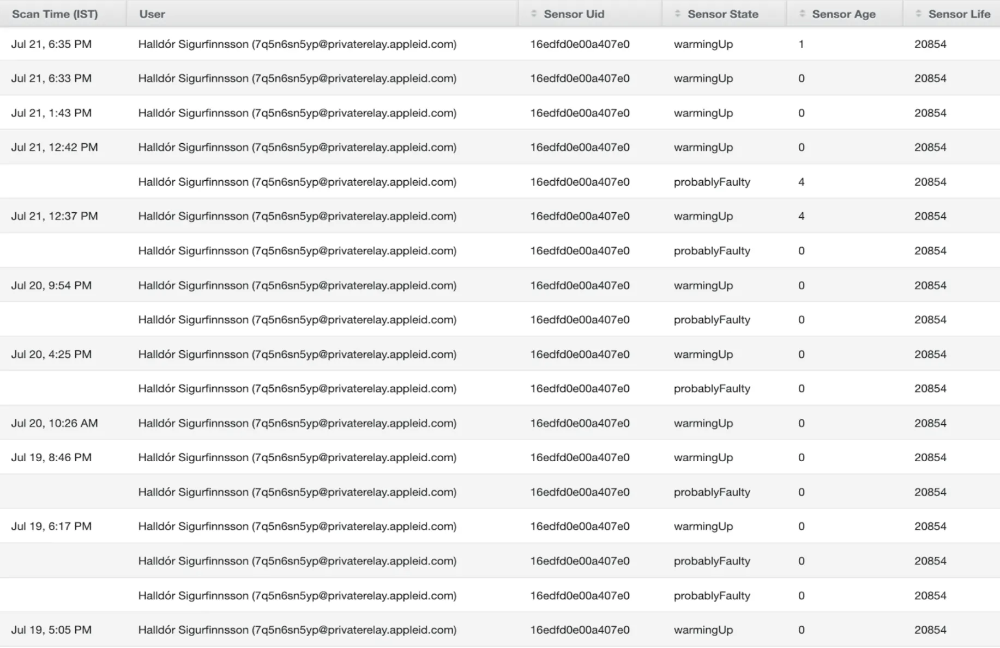
If the user has seen the countdown 2-3 times, the sensor has failed to start.
This logic applies specifically to Libre 1 in India.
Resolution
Replace the sensor once the repeated countdown loop is confirmed.
Tags & macros
Yellow tags: SENSOR_FAILED_TO_START.
Macro: None.
Expired Prematurely
Related Tags:sensor_expired_prematurely
Overview
This refers to cases where the sensor stops working or shows an expiration message before the intended 14/15 day usage window.
What the user might see
Reading stuck on the same value.
The glucose graph not updating after scans.
The app showing “Your sensor has expired” despite being well before the 14/15 day period.
Agent diagnosis steps
Ask the user to share a screenshot of the reading or error.
Confirm the sensor activation date to ensure it is still within the valid stint.
Validate that the issue is occurring before the intended expiry window.
For manual sensors, check Sensor States to review sensor age. If the age drops to 0 midway through the stint, the sensor has expired. If the age remains stuck at the same value despite multiple scans across the day, that also indicates expiry.
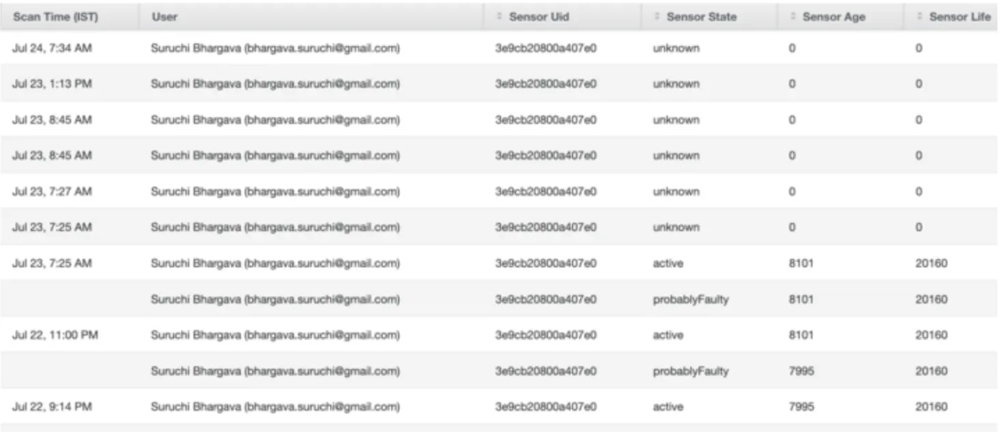
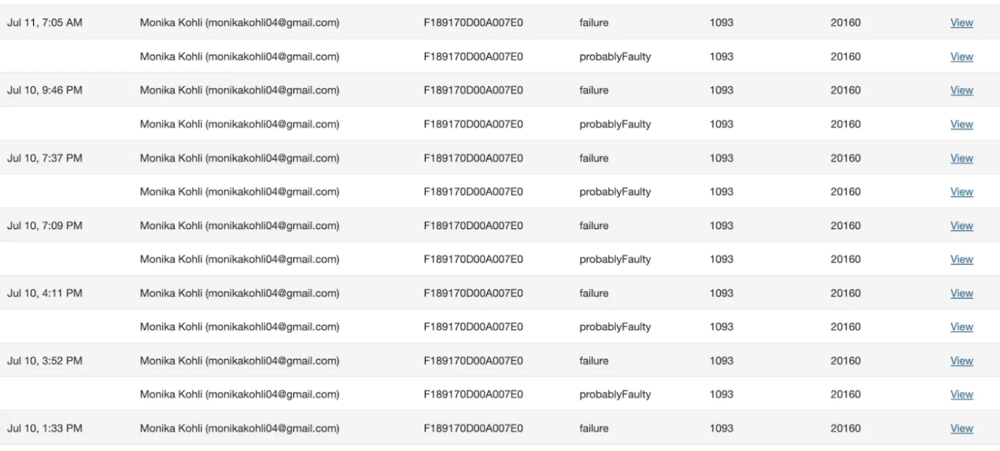
Resolution
Directly replace the sensor in all such cases.
Tags & macros
Yellow tags: sensor_expired_prematurely.
Macro: None.
Baseline Issues
Related Tags:sensor_baseline_replacement, sensor_baseline_error, sensor_baseline
Overview
Users may report that their readings appear consistently too low or too high. If the stints and states look normal, this could be a baseline calibration issue that can be corrected using manual calibration.
What the user and agent might see
Readings that seem unusually low or high.
Glucose trends that do not match expectations.
No visible issues in sensor states or stints.
Agent diagnosis steps
Ask the user if they have compared the reading with a glucometer.
If they do not have one: India or UAE: send a glucometer. Other regions: ask them to purchase one and offer reimbursement (discuss with SME).
This applies only if the sensor was purchased from Ultrahuman.
Verify the purchase before issuing a glucometer.
Ask the user for a fasted glucometer reading and the exact time it was taken.
Go to Lifetime Data and check the Filtered Trend. Compare the CGM value 20 minutes after the glucometer timestamp (or closest available timestamp).
If the difference is within 15 points, inform the user that this deviation is normal and the sensor is aligned.
Resolution
Perform manual calibration if the deviation is greater than 15 points.
No calibration is needed if the sensor is within the first 24 hours.
After calibration, if the user wants to compare again, the glucometer reading does not need to be fasted.
If accurate readings are still not observed post calibration, take a call and replace the sensor.
Example
If a user reports a fasted glucometer reading of 80 at 9:35 am, check the Filtered Trend for 20 minutes after 9:35 am (or the closest timestamp). If the CGM reading is 40 points higher, adjust the calibration by -40 via CGM Stints > User Email > Edit.
Applicable regions: India primarily (some Libre 2 users outside India as well, since NFC is required for the first scan).
Related tags:sensor_scan_not_working, Sensor_scan_not_working_replacement
Overview
This issue occurs when a user is unable to scan the sensor and the phone or app shows no response during scanning. This is commonly related to NFC issues on the phone.
What the user might see
No response from the phone or app while scanning the sensor.
Sensor not detected despite multiple scan attempts.
Agent diagnosis steps
If on iOS
Copy the user's External ID or Email ID.
Search for it on Slack, usually in the #M1-Notifications channel.
Users with Bluetooth enabled sensors such as Vixxa or Freestyle Libre 2 Plus may report frequent disconnections from the app or the need to manually scan to view readings. There is limited troubleshooting that can be done from our end for these cases.
What the user might see
Sensor disconnecting frequently.
Missing live glucose data.
Needing to manually scan to view readings.
Agent diagnosis steps
Run the following checks with the user:
Ensure Bluetooth is turned on at all times.
Ensure the Ultrahuman app is open in the background.
Confirm battery optimisation is turned off for the app.
Verify all required permissions are granted.
Ensure the phone is kept close to the sensor.
Confirm location services are enabled.
Resolution
Once all checks are completed, ask the user to observe the sensor behaviour moving forward.
No immediate replacement is required unless additional issues are observed.
Tags & macros
Yellow tags: m1_live_missing_data.
Macro: None.
Non-Live Sensor Missing Data
Applicable regions: India (specifically applicable to Freestyle Libre 1).
Related tags:sensor_scan_over_8_hours, sensor_how_many_times_to_scan
Overview
Users in India using non-live sensors like Freestyle Libre 1 may reach out saying they are seeing gaps in their glucose data. This typically happens when the sensor has not been scanned within the required time window.
If stints look fine, note that brief invalid readings can sometimes cause small gaps.
If gaps persist, check scan timestamps in Sensor States.
Inform the user that for non-live sensors, they must scan the sensor at least once every 8 hours.
This rule does not apply to live sensors unless they get disconnected.
Examples
A. The sensor has been scanned every 1-2 hours so no data gaps.
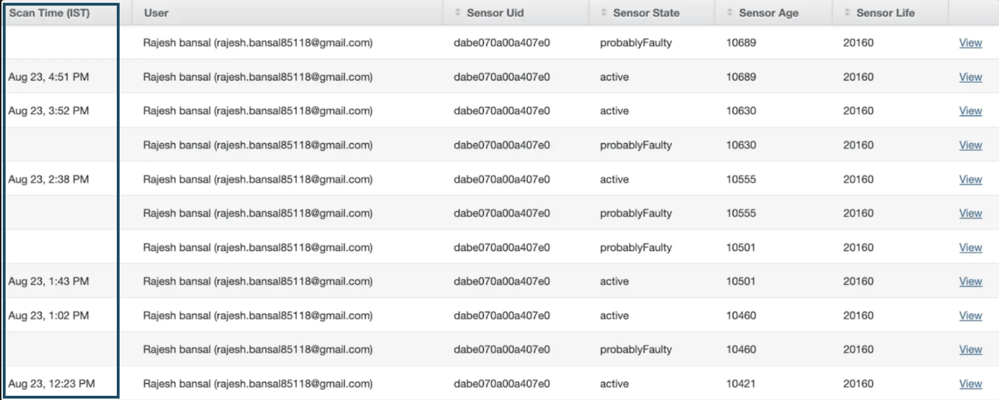
B. There is a gap of more than 8 hours.
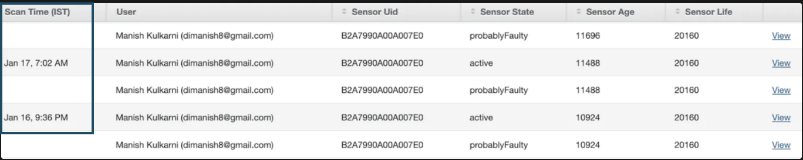
Last scan was at 9:36 pm.
Next scan was at 7:02 am.
This creates a 10-hour gap.
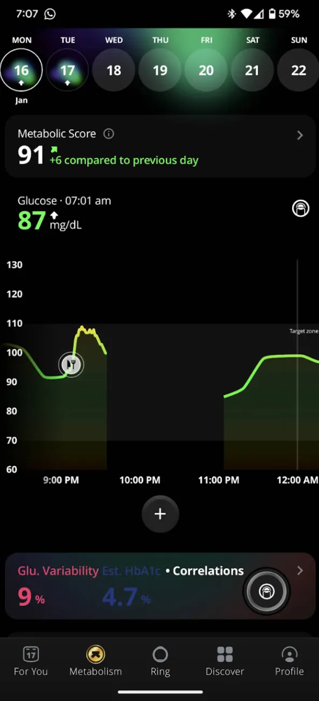
Because non-live sensors only store data for 8 hours, the user will see data for the last 8 hours but will miss the first 2 hours after the earlier scan.
Resolution
Educate the user about scanning the sensor at least once every 8 hours.
In some cases, users may see an M1 Lite blocker even though they have purchased sensors directly from Ultrahuman. This issue is most commonly observed with users in Europe.
What the user might see
Lite subscription blocker shown in the app similar to the screenshot attached below.
Inability to access M1 Live features despite purchasing sensors directly from us.
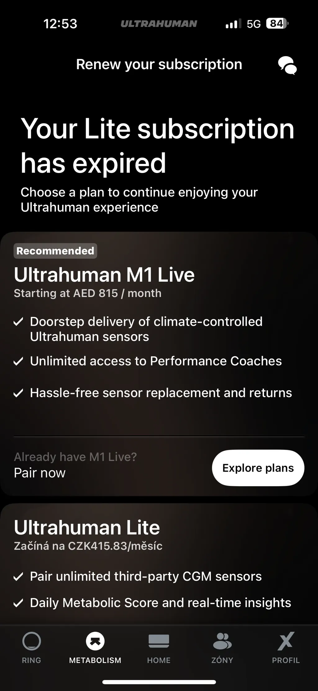
Agent diagnosis steps
Ask the user for the purchase email ID.
Identify the user's region using the timezone shown.
If the user is from EU/UK, verify the purchase on Shopify EU/UK or using the Europe Orders Sheet.
Confirm that the sensor was directly purchased from Ultrahuman.
Resolution
Once the purchase is verified, whitelist the stint.
This applies to cases where users have purchased sensors in India and are using them in the US. Ultrahuman officially supports only Libre 3 Plus in the US, which cannot be scanned directly using the Ultrahuman app.
What the user might see
No Scan button visible in the app.
Unable to scan their sensor in the US.
Sensor appears unsupported.
Agent diagnosis steps
Confirm that the user is currently located in the US.
Identify whether the user is using Libre 1, Libre 2, or Libre Pro purchased in India.
Explain that the Scan button is hidden because the app assumes the sensor is Libre 3 Plus.
Resolution
Create a manual stint to inform the app that the user is using a non-Libre 3 Plus sensor.
In the US, Ultrahuman uses the Abbott Freestyle Libre 3 Plus sensor. The Libre 3 Plus does not connect directly with the Ultrahuman app. Instead, data flows through the Libre 3 Plus app and is then pulled into Ultrahuman via the integration provider Terra.
Data flow: Libre 3 Plus sensor → Libre 3 Plus app → Terra → Ultrahuman app.
Users usually understand the connection flow. Most queries are related to data sync delays or missing data.
If a user is not able to see readings in the app, glance at stints and see what time the last reading came in WRT the user's timezone. Check the LibreView dashboard.
The data on stints is shown as per the user's local time.
The calibration process remains the same. The only difference is that the user will have to compare the readings after 40 minutes (20-minute interstitial lag + 20-minute lag for the data to flow in from the Libre app to our app).
There will be no States seen for Libre 3 Plus sensors, as these need not be scanned directly with our app.
Users can use externally procured Libre 3 Plus sensors with our app, no Lite subscription needed.
Resolution
If all checks are completed and everything looks correct, escalate the case to Terra.
Do not troubleshoot expired or near-expiry sensors for replacement under this flow.
Tags & macros
Yellow tags: Libre3_integrationerror.
Macro: None.
Multiple Accounts Scan
Applicable regions: Global.
Related tags:sensor_multiple_accounts_scan
Overview
This issue occurs when a user attempts to scan a sensor using an email ID different from the one on which the sensor was originally activated.
What the user might see
An error message shown on the app while scanning.
Scan appears to go through but no data is visible in the app.
Sensor age starting from a value other than 0.
Agent diagnosis steps
Check Sensor States and look for multiple email IDs associated with the same sensor.
If the sensor age has started from a number other than 0, it indicates a multiple accounts scan issue.
Refer to this video to identify the issue clearly.
Resolution
Identify the correct email ID the user wants to continue with.
Migrate the sensor to the user's preferred email ID.
How to identify all linked accounts
Since the sensor UID is the common denominator, filter using the UID to view all email IDs that have been used to scan the sensor.
The Ultrahuman app displays a disclaimer stating that CGM readings are not intended for diabetes management. Users can proceed with scanning the sensor only after accepting the Terms and Conditions.
What the user might see
A disclaimer screen before scanning.
Unable to proceed without accepting T&Cs.
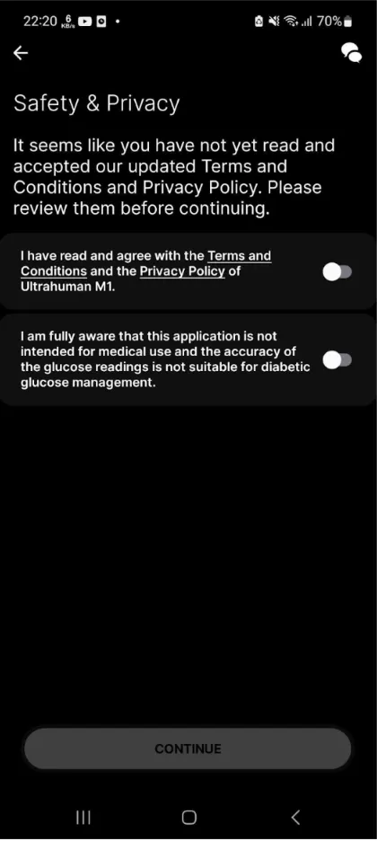
Agent diagnosis steps
Confirm whether the user has accepted the Terms and Conditions in the app.
Inform the user that acceptance is mandatory to continue scanning the sensor.
Resolution
Ask the user to accept the disclaimer and T&Cs to proceed. Reference this video.
No further troubleshooting is required.
Tags & macros
Yellow tags: sensor_app_usage_Q.
Macro: None.
Logistics
Applicable regions: India.
Related tags:M1_logistics_ETA
Sensors shipped in India
We ship two types of sensor plans in India:
M1 Plan
Freestyle Libre 1 (NFC enabled)
M1 Live Plan
GlucoRx's Vixxa 2 sensors - new launch (Bluetooth enabled)
Order flow
Sensors in India can be purchased through:
One time purchase
Subscription
One time purchases
Plans available
One time purchases are standard Shopify orders. Available plans include:
2 weeks plan - 1 CGM delivered on purchase.
12 weeks plan - 6 CGMs delivered on purchase.
24 weeks plan - 12 CGMs delivered in batches or as per user demand to manage expiry.
52 weeks plan - 26 CGMs delivered in batches or as per user demand to manage expiry.
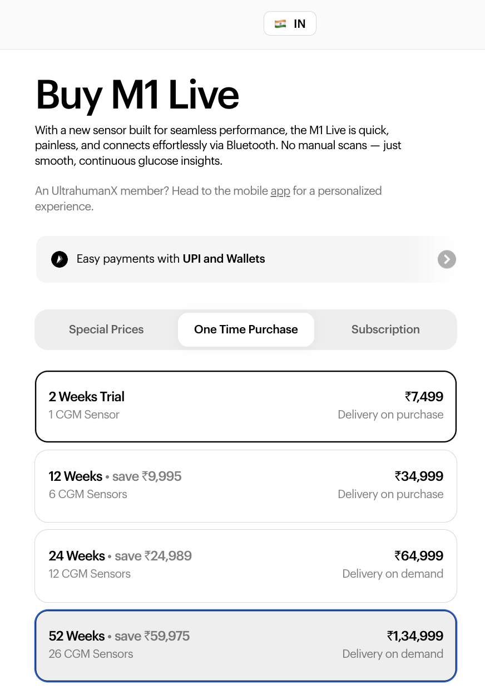
Where to find one time purchase orders
You can locate one time purchases using:
Shopify India search using purchase email or order number.
M1 Orders (Non USA) using email ID to fetch UHM reference number and tracking details.
Each shipment in the subscription will be created as a separate order on Shopify on a monthly basis. It will appear as the Ultrahuman M1 Monthly product.
Due to RBI guidelines, if the renewal date is within 24 hours of pause or cancellation, the order might still be placed.
We handle this by:
Informing the user while pausing or cancelling.
Letting them know we can cancel and refund if the order still goes through.
5. Important subscription change note
Any changes made inside the subscription tab like shipping address or contact information will apply to the entire subscription and carry forward to future orders.
6. Address change for current month only
If the user wants the current month delivered to a different address:
Find the order ID for that month.
Make the address change on that order only.
7. Avoid editing address and contact on subscription ID
Avoid making changes to contact details and address on the subscription ID itself.
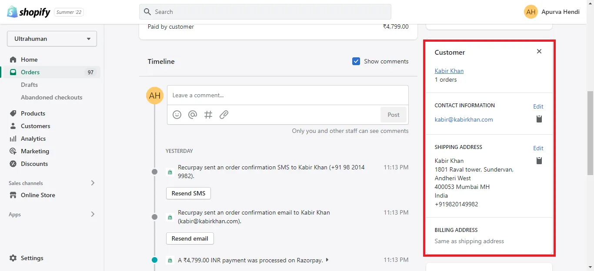
8. Cancellation handling guidance
Suggest skipping or changing the next order date first.
Push for pause over cancellation since it is easier for the user to restart later.
Cancellation or pause does not stop an order already placed; it stops future orders only.
If an order is placed and the user cancels after, that already placed order will still remain.
Ops communication: inform Ops if shipment should not be sent or needs to be picked up.
Ops POC
Aman Qureshi from UH Ops handles all M1 related ops in India including shipping, order tracking, replacements, and RTO.
All communication with Aman Qureshi can be handled through the #cx-ops Slack channel.
Courier partner
BlueDart handles most Indian M1 orders. Exceptions may apply for remote locations. Aman Qureshi coordinates with the courier in case of issues.
Logistics
Related tags:M1_logistics_ETA
Sensors shipped in UAE
We currently ship:
Freestyle Libre 2 Plus sensors.
Some older users may still have Libre 2.
Order flow
Sensors in UAE can be purchased through:
One time purchase
Subscription
One time purchases
Plans available
One time purchases are standard Shopify orders. Available plans include:
1 month plan - 2 CGMs delivered on purchase.
3 months plan - 6 CGMs delivered on purchase.
6 months plan - 13 CGMs delivered in batches to manage expiry.
1 year plan - 26 CGMs delivered in batches to manage expiry.
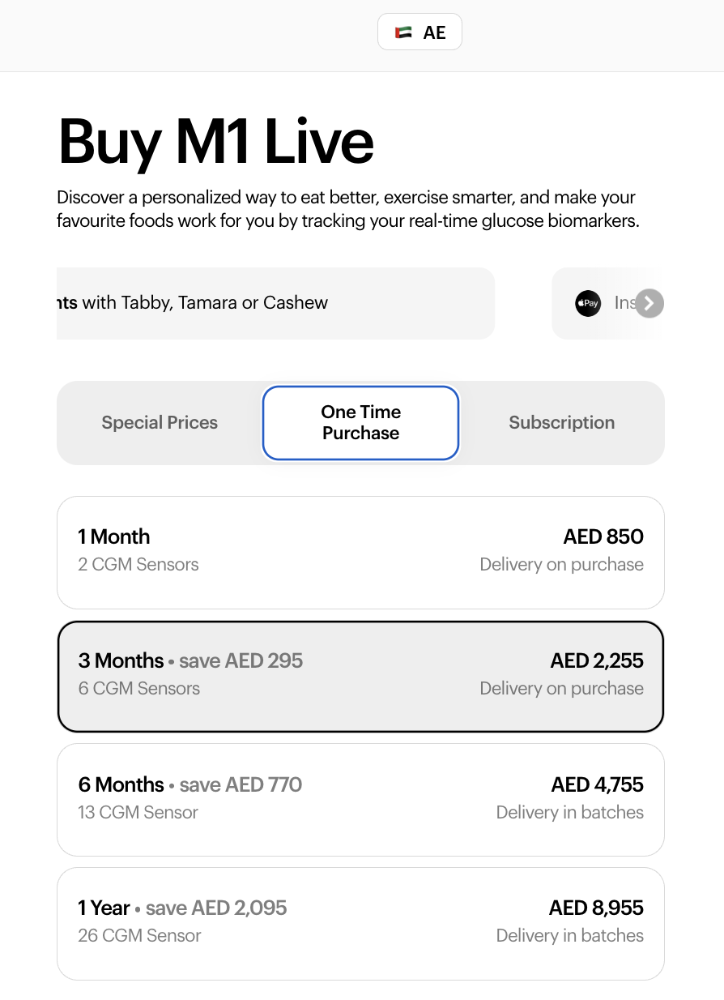
Where to find one time orders
You can locate one time purchases using:
UAE Shopify search using purchase email or order number.
M1 Orders (Non USA) using email ID to fetch UHM reference number and tracking details.
Each shipment in the subscription will be created as a separate order on Shopify on a monthly basis. It will appear as the Ultrahuman M1 Monthly product.
Due to RBI guidelines, if the renewal date is within 24 hours of pause or cancellation, the order might still be placed.
We handle this by:
Informing the user while pausing or cancelling.
Letting them know we can cancel and refund if the order still goes through.
5. Important subscription change note
Any changes made inside the subscription tab like shipping address or contact information will apply to the entire subscription and carry forward to future orders.
6. Address change for current month only
If the user wants the current month delivered to a different address:
Find the order ID for that month.
Make the address change on that order only.
7. Avoid editing address and contact on subscription ID
Avoid making changes to contact details and address on the subscription ID itself.
8. Cancellation handling guidance
Suggest skipping or changing the next order date first.
Push for pause over cancellation since it is easier for the user to restart later.
Cancellation or pause does not stop an order already placed; it stops future orders only.
If an order is placed and the user cancels after, that already placed order will still remain.
Ops communication: inform Ops if shipment should not be sent or needs to be picked up.
Ops POC
Violet George, from the IQF team, is the POC for all UAE orders shipped within UAE.
All communication with Violet George can be handled through the #cx_iqf_ops_support Slack channel.
Fulfilment notes
M1 Live CGM sensors are shipped to users directly from the UAE warehouse via IQF.
Sensors are shipped from India to UAE and then to users.
For shipping from India to UAE, we can loop in Deepti S or Aman Qureshi.
Courier partner
IQF handles logistics for everything in UAE.
Logistics
Related tags:M1_logistics_ETA
Sensors shipped in EU / UK
We currently ship:
Freestyle Libre 2 Plus sensors (Bluetooth enabled).
Some older users may still have Libre 2.
Order flow
EU / UK currently supports one time purchases only.
No subscription flow for these regions.
One time purchases
Plans available
UK plans
2 weeks trial - 1 CGM.
4 weeks - 2 CGMs.
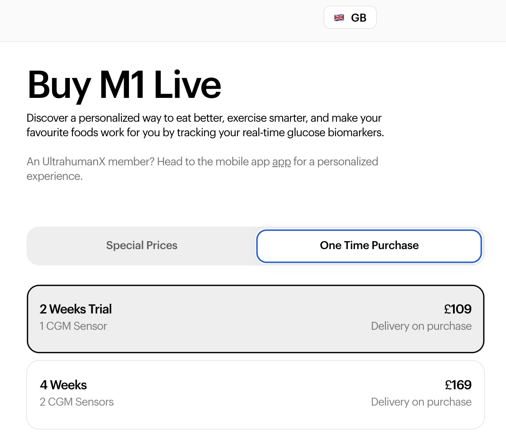
EU plans
4 weeks - 2 CGMs.
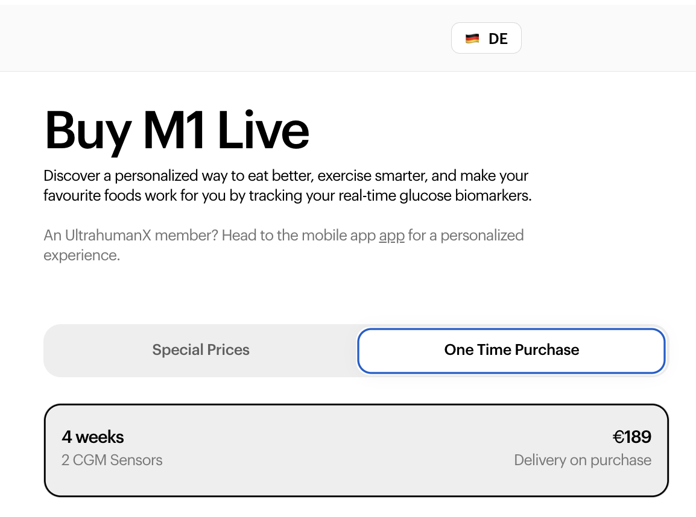
Please note: United Kingdom (UK) is in Europe but not a part of European Union.
Finding orders
Orders can be purchased:
Via website as a standard order.
Or via in app purchase or Apple Pay, which gets captured on Stripe and does not appear on Shopify.
Flow 1: Website purchases
These orders show up on Shopify and OMS.
Where to find the order
You can locate orders using:
EU / UK Shopify search using purchase email or order number.
M1 Orders (Non USA) using email ID to fetch UHM reference number and tracking details.
Alternatively, create a new thread on #cx-ops and tag Deepti S for help. Example thread attached here.
ETA: 5 to 7 days.
The tracking link will be updated on Shopify, OMS, or the relevant sheet depending on the order source.
As a basic check, please review all possible locations for the tracking link for the order. If it is not found anywhere, then it can be flagged as mentioned above.
Ops POC
Deepti S handles shipping and tracking related queries for EU / UK.
Courier partner
Courier varies by location:
FedEx
Royal Mail
Others depending on region
Logistics
Related tags: Use these tags for US cases:
M1_US_Prescription for prescription request questions.
M1_US_Techissue for tech issues, app not working, unable to link sensor.
Abdul Akhtar: project POC for non technical queries.
Rachel Ho: FH team member.
What to flag in #ultrahuman-cx-foundation-health
Expediting orders or replacements.
Telehealth review stuck.
Prescriptions - these are sent via email by default, but if user has not received it, we can ask Rachel.
Order stuck in Prescription requested state.
Address update (flag to keep them in the loop).
Important: Always share the FHS number (Shipment ID) with Rachel or FH team. UHM is an internal reference and they will not be able to map it.
Additional reference:
FHS is created only after the medical consult form is accepted. Slack reference here.
FHS can be located by following these steps: Foundation Health Requests → enter email → view → shipments → shipment ID.
What to flag to our tech team
Payment has come in and shows up on Stripe, but no order is created on the dashboard. Example thread here.
For address update, always flag using the UHM. Example thread here.
For a change in the user's next order date/batch shipping.
Subscription management
Subscription management is handled via Stripe.
Steps
Go to Stripe UAE and enter user email or name.
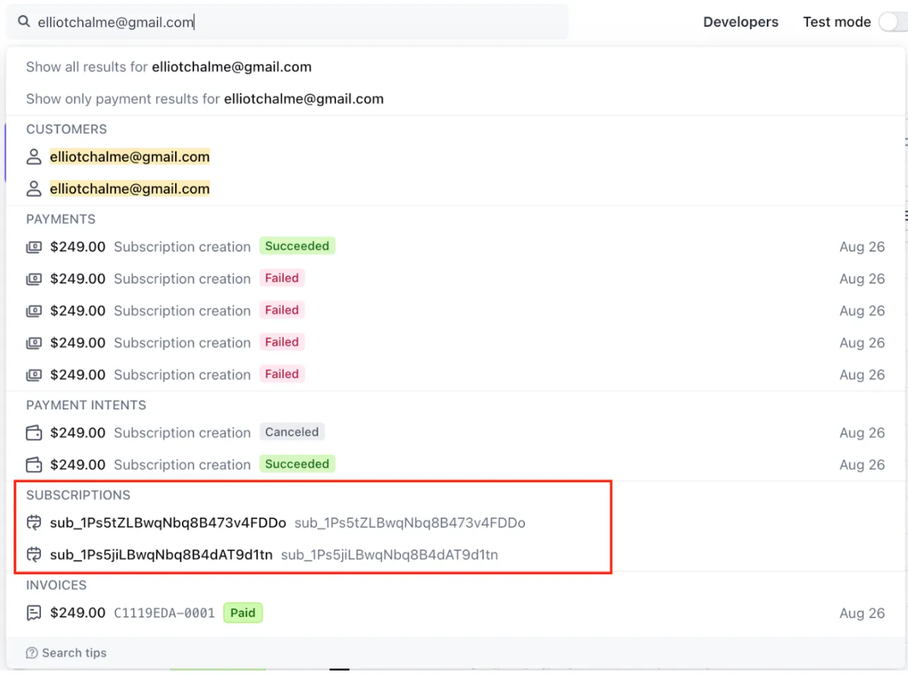
Open the user subscription.
Click Actions in the top right corner.
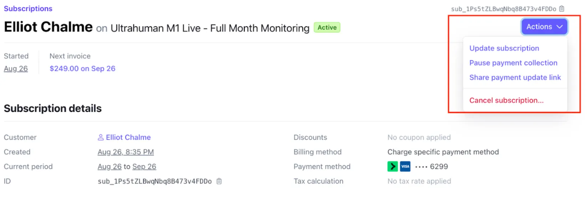
Based on request:
Pause payment subscription or delay till specific date. Click on Pause payment collection → Indefinite if that is the ask, or “Custom date” and enter the date till it is to be paused.
We can also click on “Cancel subscription” if that is what user wants.
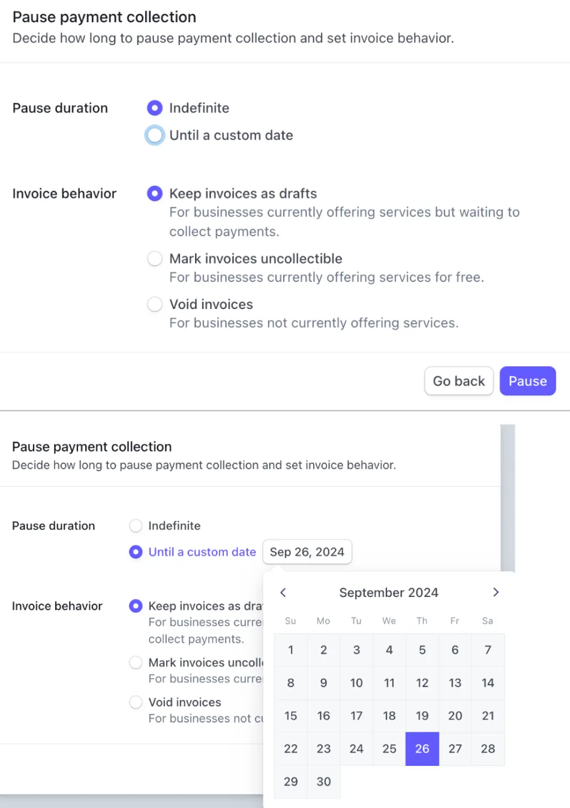
Batch shipping requests
Batch shipping is only for 1 year plan.
How to handle:
Flag tech on call with the UHM.
Ask them to create the next order as per user request.
No need to involve Rachel or HEWA for batch shipping requests.
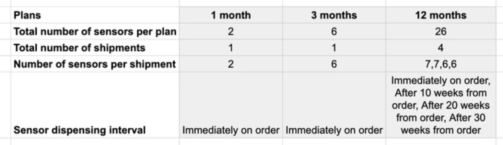
Sensors are shipped in batches only for the 1-year plan. If a user reaches out asking for multiple batches to be shipped out, flag tech with the UHM and ask them to create the next order or merge the next 2 orders.
The next order creation dates are visible on the user's profile; you can ask tech to change the dates if needed, as per the user's request. Example thread here.
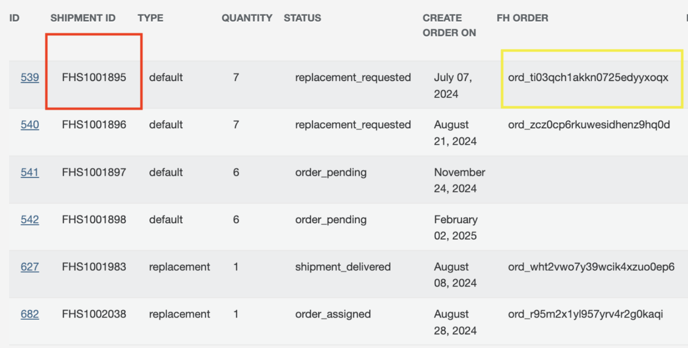
If Rachel says she is unable to find the FHS ID (marked in red) on her end, you can share the FH order ID (marked in yellow). Either way, for batch shipping date management, it is primarily managed from our end. Nothing much FH can do.
HEWA
HEWA is Foundation Health’s fulfillment and pharmacy partner.
Raise a manual refund request on the #cx-finance channel.
Fill the eu-row-in-uae-bank-refund-form form.
Subscription refunds
If a user requests a refund for a previous charge and we are stopping shipments or getting sensors RTO'd, confirm whether cancelling the subscription allows a refund of the last charge.
Tags: sensor_refund in cases where the refund is processed. sensor_subscription_cancel in cases where we are cancelling the subscription.
Replacements
For UAE sensors, replacement via OMS is not supported. All replacements must be processed manually.
Mandatory checks before replacement
Before issuing a replacement, always complete both checks:
Raise a manual refund request on the #cx-finance channel.
Fill the eu-row-in-uae-bank-refund-form form.
Subscription refunds
If a user requests a refund for a previous charge and we are stopping shipments or getting sensors RTO'd, confirm whether cancelling the subscription allows a refund of the last charge.
Tags: sensor_refund in cases where the refund is processed. sensor_subscription_cancel in cases where we are cancelling the subscription.
Replacements
For EU or UK sensors, replacement via OMS is not supported. All replacements must be processed manually.
Mandatory checks before replacement
Before issuing a replacement, always complete both checks:
Invoice can be from Ultrahuman or authorised partners selling the Ultrahuman M1 plan.
Invoice must mention Ultrahuman M1 plan.
If invoice shows only Libre 2 or Libre 2 Plus, it indicates an outside purchase and cannot be replaced from us.
2. Replacement quantity check
Ensure replacements issued are not more than 50% of the total sensors purchased by the user.
If there are more than 50% replacements issued, we can process a refund for the user.
Exceptions can be made only after SME or Lead approval.
Replacement process
M1 replacement flow for US orders is now automated on the OMS.
Earlier, replacements were created manually after entries were added in the M1 US replacement sheet.
Going forward, replacements should be processed directly on OMS, similar to ring replacements.
Steps to process replacement on OMS
Go to Dash → Foundation Health Requests.
Search for the user's email address.
Open the corresponding order.
Select Replace Sensor.
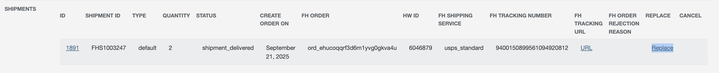
If replacement cannot be created via OMS
Use this operational workaround.
Operational workaround email
To: hewa-ultrahuman-support@healthwarehouse.com
Cc: support@foundationhealth.com
Subject: Ultrahuman replacement sensor
Email body:
FHS ID:
How many sensors to send:
Name of recipient:
DOB of recipient:
Address of recipient:
Reason for replacement:
Healthwarehouse will email back with the tracking number.
Order cancellation
Cancel the order via API.
Any other issues
Contact the Foundation Health team via the shared Slack channel.
The dash will only allow replacements up to the number of sensors purchased. If the replacement cannot be processed even though it is valid, use the operational workaround.
Tags: Relevant replacement tag subject to the case to be added.
Returns
We usually do not RTO faulty sensors during replacement.
A return is required only in case of a refund where the quantity is more.
RTO process
Check with the user if USPS dropzone pickup works for them.
Flag to Moin on #int_shipments_rto for return shipping labels with all the user details.
Share labels with the user once ready.
Tags: In case of RTOs please use logistics_reverse_pick_up.
Refunds
Subscription cancellation process
If the user has reached out before the deduction date, we can cancel the subscription available on Stripe.
If the order has been created and shipped out, coordinate with the user to get the sensor picked up or let them keep it, then process the refund.
If the order has been created but not shipped, cancel the subscription, refund, and ask HEWA not to ship the order.
If a shipment is in transit, HEWA cannot recall it.
In any RTO case, coordinate with the user (labels, dropzone, doorstep) and then process the refund.
If the sensor is shipped to an incorrect address, process a refund.
If the user says the shipment is not received, HEWA can only provide UPS tracking details; give the user the benefit of the doubt and send a replacement/refund as preferred. Flag to HEWA for visibility.
Refund process
Since the purchase was made via Stripe, process the refund manually on #cx-finance by filling the us-bank-refund-form or paypal-refund-form.
If the user is very irate and demands refund to the original payment source, Stripe refund can be done as an exception, only after lead approval.